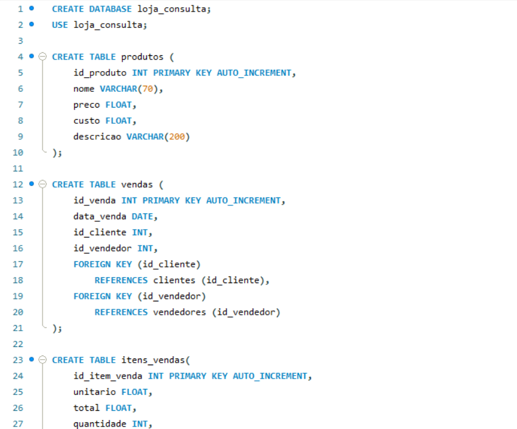
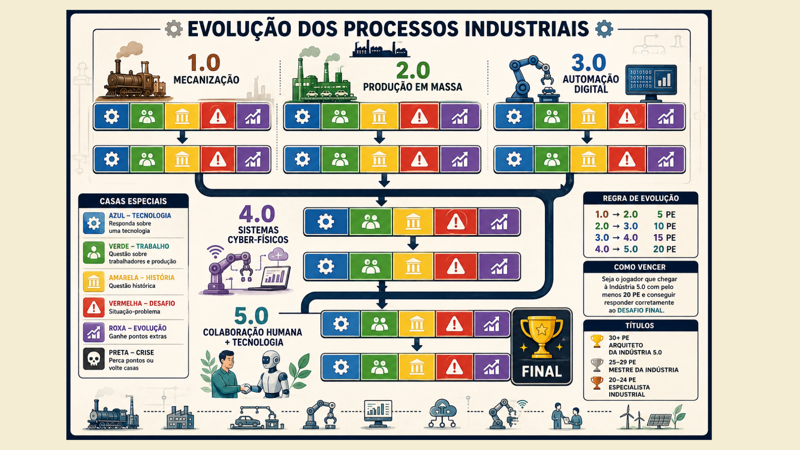

Banco de dados
Professor Gabriel
 MySQL Workbench
MySQL Workbench

Estruturas e consultas de banco de dados
Descrição: Nesta atividade criamos um banco de dados, inserimos dados e realizamos consultas.
Reflexão: Aprender sobre linguagem sql e suas aplicações práticas é extremamente importante para o desenvolvimento de software, criação de sistemas de informação e análise de dados.
Habilidades:
Indústria e Inovação
Professor Douglas
Evolução dos processos industriais
Descrição: Fizemos em grupo as seguines pesquisas:
1. Contexto histórico de cada revolução industrial (do seu grupo)
2. Principais tecnologias utilizadas
3. Impactos na produção e no trabalho
4. Comparação entre os modelos industriais (1.0 a 5.0)
5. Aplicações práticas no cenário atual
6. Principais autores
7. Fontes pesquisadas
Itens acima sobre as revoluções industriais e industrias 1.0 a 5.0
Depois disso, fizemos um jogo de tabuleiro sobre o tema.
Reflexão: Conhecer as raízes e o passado das tecnologias, nos dão uma grande base de conhecimento sobre elas. Isso pode nos ajudar a saber para onde elas estão indo, fazendo com que estejamos mais conectados a elas.
Habilidades:
